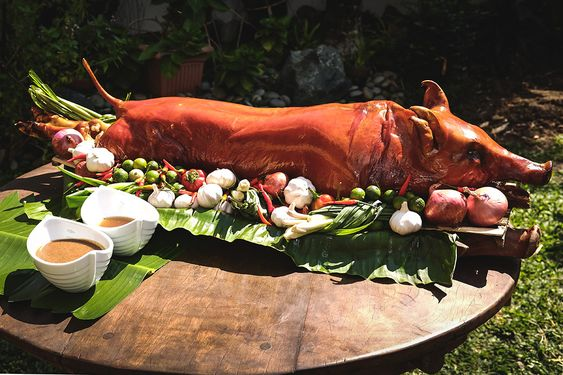

Lechon de Cebu
Back to Home

Description
The Filipino island of Cebu is famous for its lechon, which is considered to be the juiciest and crispiest in the Philippines. This traditional recipe calls for a few specific ingredients. For instance, the inside of the pig is brushed with soy sauce and filled with lemongrass, start anise, bay leaves, garlic and saba bananas - a particular type of cooking bananas typical for the Filipino cuisine. The glazing, on the other hand, is done by basting the pig's skin with Sprite, which is believed to give it that perfect crispiness.
Ingredients
Lechon Cebu
- 1 whole pig (18-20) (40-44 lb)
- salt
- black pepper
- soy sauce
Glaze
Stuffing
- 10 bundles lemongrass, tangled
- 1/4 cup (110g) star anise
- 6 bay leaves, cut into small pieces
- 5 cups crushed garlic
- 2 kg (4.4 lb) green onion
- 8 pcs saba bananas, peeled and halved
Preparation
- Remove the entrails and scrape the bristles off the pig's skin.
- Rinse the pig with water and let it drain slightly.
- Rub the pig with salt and pepper inside and out. Then, brush the inside with some soy sauce.
- Stuff the pig's belly with saba bananas, start anise, green onion leaves, crushed garlic, and bay leaves. Finish with tangled bundles of lemongrass. and sew the belly with kitchen thread.
- Skewer the pig with a mid-sized bamboo stick.
- Roast over hot charcoal, turning constantly until the meat is tender, and the skin crisp. Occasionally, glaze the pig's skin with Sprite - use a brush or a sponge.
- Serve lechon choppped into pieces, or bring the entire pig to the table.